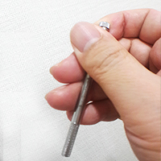
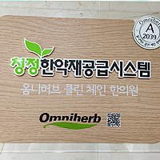

증상과 체질을 함께 살핍니다
같은 불편함이라도 사람마다 몸의 바탕은 다릅니다. 지금 겪고 계신 증상과 타고난 체질적 특성을 함께 살펴, 현재의 건강 상태와 앞으로의 건강 관리까지 고려한 진료 방향을 고민합니다.
현재의 증상
언제부터, 어떤 상황에서 불편한지 충분히 듣고 지금의 상태를 꼼꼼히 확인합니다.
체질적 특성
8체질의학의 관점에서 몸의 타고난 강약을 살펴, 증상을 체질과 함께 이해합니다.
한 분 한 분에게 맞는 진료 방향
두 가지를 함께 고려해 진료 방향을 정하고, 일상에서 지킬 수 있는 관리 방법까지 설명해 드립니다.
체질별 설명과 음식은 8체질의학의 일반적인 안내입니다. 내 체질은 진료를 통해 확인하시길 권합니다.
체질 확인은 이렇게 진행됩니다
상담과 진찰
현재의 증상과 생활 습관을 듣고 한의사가 맥진으로 체질을 살핍니다.
체질 확인
경우에 따라 여러 번의 진료를 거쳐 체질을 확인합니다.
체질에 맞춘 안내
확인된 체질과 현재 상태에 맞춰 진료 방향과 음식, 생활 관리를 안내합니다. (체질표 희망 시 설문지 작성 후 제공 가능)

8체질 치료 시 안내사항
8체질 치료는 일반적인 침 치료와 방식이 조금 다릅니다. 치료 전에 알아 두시면 좋습니다.
-
아픈 곳이 아닌 팔과 다리에 침을 놓습니다
8체질 침법은 증상이 있는 곳에 직접 침을 놓지 않고, 팔꿈치 아래와 무릎 아래에 있는 혈(장부의 기운을 조절하는 혈)을 자극하여 치료합니다.
예) 허리가 아플 때 허리에 직접 침을 놓지 않고 팔, 다리의 혈을 자극하여 치료합니다.
-
체질 확인에는 몇 차례의 내원이 필요할 수 있습니다
체질은 맥진으로 판별하지만, 침 치료 등을 통해 확인하는 과정이 더욱 중요합니다. 그래서 몇 차례 내원이 필요할 수 있으며, 내원하실 때마다 몸 상태를 잘 살펴 한의사에게 알려 주시면 됩니다.
-
어린 자녀는 부모님의 맥을 함께 참고합니다
유소아(대략 5세 이하)는 진찰 중 움직여 맥이 흐트러지거나 맥이 매우 작습니다. 정확한 진단을 위해 가급적 두 분 부모님의 맥을 함께 참고합니다.
진료 과정
현재의 증상과 체질적 특성을 함께 살펴 진료 방향을 정합니다. 단계마다 무엇을 하는지 설명해 드립니다.
상담
불편한 증상이 언제부터, 어떤 상황에서 나타나는지와 생활 습관, 이전 치료 경험을 충분히 듣습니다.
상태 확인
진찰을 통해 현재 몸의 상태와 체질적 특성을 함께 살핍니다.
진료 방향 설명
살펴본 내용을 바탕으로 앞으로의 진료 방향을 알기 쉽게 설명해 드립니다.
이후 관리 안내
체질에 맞는 음식과 생활 관리 방법을 안내하고, 다음 진료에서 변화를 함께 확인합니다.
처음 오실 때 알아 두시면 좋아요
드시는 약 알려 주기
복용 중인 약이나 건강기능식품이 있다면 이름을 메모해 오시면 상담에 도움이 됩니다.
증상 기록하기
불편한 증상이 언제 시작되었고 언제 심해지는지 적어 오시면 더 정확하게 살펴볼 수 있습니다.
신분증 지참
진료 접수 시 본인 확인을 위해 신분증을 지참해 주세요.
자주 묻는 질문
의료진

한약재 정보
가족사랑 한의원은 식품의약품안전처의 인증을 획득하고 관리, 감독을 받고 있는 제약회사 중 옴니허브와 대효제약(참초원)의 안전한 한약재를 사용하고 있습니다.
- 깨끗하고 품질 좋은 한약재를 사용합니다.
- 한약의 약효 성분을 그대로 유지합니다.
- 중금속 검사를 통과한 깨끗한 한약재입니다.
- 잔류농약 검사를 통과한 깨끗한 한약재입니다.
- 이산화황 검사를 통과한 깨끗한 한약재입니다.